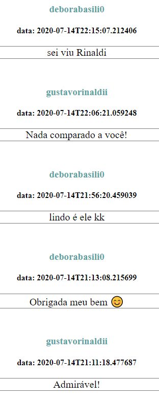
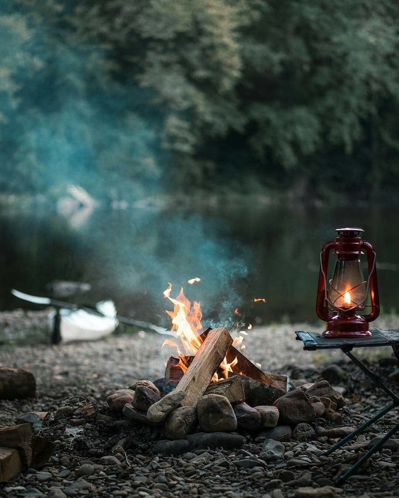

Carta de amor
Esta é uma carta de amor, abaixo você encontrará um relato do começo de uma história, talvez a mais importante da minha vida!
Primeira conversa
"A sua cor é rosa e verde", essa foi a frase que deu início a uma conversa quase que infinita. Segundo ela, essa imagem foi compartilhada como uma tentativa de me fazer responder e,
cada cor representava uma característica, ou algo que faz parte de uma personalidade. Toda vez que faço essa retrospectiva na minha cabeça, eu penso em como uma pessoa se esforça
pra começar um relacionamento com alguém e passar uma imagem decente, e ao mesmo tempo que reconheço esse esforço, eu me questiono a necessidade de construir, por exemplo, tal frase:
"E esse projeto de carro elétrico, se incluir transportes públicos, será uma revolução automobilística", observe: eu não estava interessado nesse assunto, nós começamos nossa conversa
falando sobre trabalho, e eu, idealista do jeito que sou, queria conversar sobre sonhos, objetivos, perspectivas, crenças e filosofia.
Mas a motivação era certa, o motivo, a causa... não demorou muito pra que eu identificasse pensamentos, sonhos e vontades semelhantes, conversamos sobre tanta coisa... trabalho,
sobre a fascinação por crianças, e sobre a vontade de dar aula, opiniões sobre a vida, questionamentos, família, propósitos, tudo! Nesses primeiros dias de conversa já era claro
que tinhamos muita coisa em comum, e ao mesmo tempo coisas muito diferentes, experiências, vivências, religião e talvez algumas metas. Mas o quão chato deve ser conversar com alguém
que concorda com você sempre? ou que discorda de você sempre? Então... acredito sim que as pessoas se atraem pela aversão delas mesmas, eu procuro em alguém, algo que eu não tenho.
Ela um dia me perguntou qual era minha intenção, e eu disse que todo ser humano tem uma necessidade pra suprir, seja necessidade profissional, de amizade ou de afeto.
Primeira vista
Um dia antes da primeira conversa: eu estava jogado ao relento, num deck, cercado de água e quase me afogando nas minhas angústias! Triste, estava com amigos mas estava triste,
o ano foi tomado pelo corona vírus e eu não respeitava as regras, minhas esperanças estavam quase que esgotadas, diante de tudo, não me via conhecendo uma pessoa assim tão cedo.
Era tarde, amiga de um amigo, e a ideia de buscá-la em outra cidade era dele. Eu, tão pessimista e desesperançoso pensei: "Já ta tarde e ele está querendo fazer todo esse trabalho",
mas não frustrei ninguém, e se tivesse impedido, eu quem seria a pessoa mais frustrada do mundo... que imprevisível!!! E o que talvez pudesse ser uma oportunidade única pro meu amigo,
acabou sendo só mais uma decepção, tadinho! Ele queria tanto beija-la.
Detalhe, alguns detalhes, por pouco tudo seria diferente, um segundo é tempo suficiente pra mudar tudo, pra sempre! Depois desse dia nunca mais parei de conversar com ela, e hoje,
no dia em que escrevo esse texto, eu relembro algumas conversas que tivemos, e tento me dedicar desde o primeiro minuto de conversa, até o dia de hoje e, mesmo com todas as falhas
que cometi e as coisas que deixei de falar, eu tentei sempre ser o melhor que pude, e acredito que ao longo da vida todo mundo, eventualmente encontra seu amor.


The night was dark. The moon, on the wane, scarcely left the horizon, and was covered with heavy clouds; the height of the trees deepened the darkness.
It was not enough to reach the walls
It was not enough to reach the walls; an opening in them must be accomplished, and to attain this purpose the party only had their pocket-knives. Happily the temple walls were built of brick and wood, which could be penetrated with little difficulty; after one brick had been taken out, the rest would yield easily.
They set noiselessly to work, and the Parsee on one side and Passepartout on the other began to loosen the bricks so as to make an aperture two feet wide. They were getting on rapidly, when suddenly a cry was heard in the interior of the temple, followed almost instantly by other cries replying from the outside. Passepartout and the guide stopped. Had they been heard? Was the alarm being given?
The guards now appeared at the rear of the temple
Common prudence urged them to retire, and they did so, followed by Phileas Fogg and Sir Francis. They again hid themselves in the wood, and waited till the disturbance, whatever it might be, ceased, holding themselves ready to resume their attempt without delay. But, awkwardly enough, the guards now appeared at the rear of the temple, and there installed themselves, in readiness to prevent a surprise.
It would be difficult to describe the disappointment of the party, thus interrupted in their work. They could not now reach the victim; how, then, could they save her? Sir Francis shook his fists, Passepartout was beside himself, and the guide gnashed his teeth with rage. The tranquil Fogg waited, without betraying any emotion.
With the ten warriors
In this way, with ten warriors, I built a series of three steps from the ground to the shoulders of the topmost man. Then starting from a short distance behind them I ran swiftly up from one tier to the next, and with a final bound from the broad shoulders of the highest I clutched the top of the great wall and quietly drew myself to its broad expanse.
After me I dragged six lengths of leather from an equal number of my warriors. These lengths we had previously fastened together, and passing one end to the topmost warrior I lowered the other end cautiously over the opposite side of the wall toward the avenue below. No one was in sight, so, lowering myself to the end of my leather strap, I dropped the remaining thirty feet to the pavement below.
The night was dark. The moon, on the wane, scarcely left the horizon, and was covered with heavy clouds; the height of the trees deepened the darkness.
It was not enough to reach the walls
It was not enough to reach the walls; an opening in them must be accomplished, and to attain this purpose the party only had their pocket-knives. Happily the temple walls were built of brick and wood, which could be penetrated with little difficulty; after one brick had been taken out, the rest would yield easily.
They set noiselessly to work, and the Parsee on one side and Passepartout on the other began to loosen the bricks so as to make an aperture two feet wide. They were getting on rapidly, when suddenly a cry was heard in the interior of the temple, followed almost instantly by other cries replying from the outside. Passepartout and the guide stopped. Had they been heard? Was the alarm being given?
The guards now appeared at the rear of the temple
Common prudence urged them to retire, and they did so, followed by Phileas Fogg and Sir Francis. They again hid themselves in the wood, and waited till the disturbance, whatever it might be, ceased, holding themselves ready to resume their attempt without delay. But, awkwardly enough, the guards now appeared at the rear of the temple, and there installed themselves, in readiness to prevent a surprise.
It would be difficult to describe the disappointment of the party, thus interrupted in their work. They could not now reach the victim; how, then, could they save her? Sir Francis shook his fists, Passepartout was beside himself, and the guide gnashed his teeth with rage. The tranquil Fogg waited, without betraying any emotion.
With the ten warriors
In this way, with ten warriors, I built a series of three steps from the ground to the shoulders of the topmost man. Then starting from a short distance behind them I ran swiftly up from one tier to the next, and with a final bound from the broad shoulders of the highest I clutched the top of the great wall and quietly drew myself to its broad expanse.
After me I dragged six lengths of leather from an equal number of my warriors. These lengths we had previously fastened together, and passing one end to the topmost warrior I lowered the other end cautiously over the opposite side of the wall toward the avenue below. No one was in sight, so, lowering myself to the end of my leather strap, I dropped the remaining thirty feet to the pavement below.
The night was dark. The moon, on the wane, scarcely left the horizon, and was covered with heavy clouds; the height of the trees deepened the darkness.
It was not enough to reach the walls
It was not enough to reach the walls; an opening in them must be accomplished, and to attain this purpose the party only had their pocket-knives. Happily the temple walls were built of brick and wood, which could be penetrated with little difficulty; after one brick had been taken out, the rest would yield easily.
They set noiselessly to work, and the Parsee on one side and Passepartout on the other began to loosen the bricks so as to make an aperture two feet wide. They were getting on rapidly, when suddenly a cry was heard in the interior of the temple, followed almost instantly by other cries replying from the outside. Passepartout and the guide stopped. Had they been heard? Was the alarm being given?
The guards now appeared at the rear of the temple
Common prudence urged them to retire, and they did so, followed by Phileas Fogg and Sir Francis. They again hid themselves in the wood, and waited till the disturbance, whatever it might be, ceased, holding themselves ready to resume their attempt without delay. But, awkwardly enough, the guards now appeared at the rear of the temple, and there installed themselves, in readiness to prevent a surprise.
It would be difficult to describe the disappointment of the party, thus interrupted in their work. They could not now reach the victim; how, then, could they save her? Sir Francis shook his fists, Passepartout was beside himself, and the guide gnashed his teeth with rage. The tranquil Fogg waited, without betraying any emotion.
With the ten warriors
In this way, with ten warriors, I built a series of three steps from the ground to the shoulders of the topmost man. Then starting from a short distance behind them I ran swiftly up from one tier to the next, and with a final bound from the broad shoulders of the highest I clutched the top of the great wall and quietly drew myself to its broad expanse.
After me I dragged six lengths of leather from an equal number of my warriors. These lengths we had previously fastened together, and passing one end to the topmost warrior I lowered the other end cautiously over the opposite side of the wall toward the avenue below. No one was in sight, so, lowering myself to the end of my leather strap, I dropped the remaining thirty feet to the pavement below.